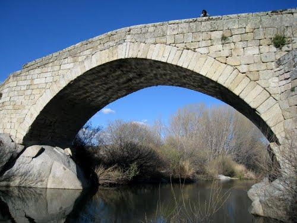

| MONUMENTOS | |||||||
|
|||||||
| LUGARES DE INTERÉS | |||||||
|
Los puentes de Valsordo y Santa Yusta están situados sobre el río Alberche, en el Camino Imperial Toledo-Valladolid, antiguamente paso obligado del ganado trashumante entre Extremadura y Castilla-León, también de personas y mercancías que hacían el recorrido entre Andalucía, Toledo, Madrid, Segovia y Soria. Discurre sobre ellos la Cañada Real Leonesa-Oriental utilizada por la Mesta sobre todo en la Edad Media para la trashumancia de animales. En el año 1273 se fundó el “Honrado Concejo de la Mesta”. La estructura del puente más antiguo, de tres ojos, llamado Puente de Valsordo es Románica, construido sobre otro de origen romano, En las vías de comunicación romanas en la Península Ibérica, Itinerario Antonino siglo III D.C., se encuentra que por Cebreros discurría una calzada que incluía un puente romano sobre el Alberche. Fue utilizado por los romanos desde el año 280 A.C. . Debido a las lluvias torrenciales y riadas que ha habido durante la Edad Media, y los últimos siglos, el puente tuvo que ser modificado y reconstruido varias veces. En el año 1258 hubo grandes inundaciones y persistentes lluvias que duraron seis meses; el año 1454 fue de muchas lluvias y grandes nevadas. En el año 1504 cuando muere la Reina Isabel La Católica, el puente de Valsordo debía de estar dañado, así se deduce de la crónica del traslado de sus restos, cuando pasan por Cebreros, camino de Granada, para ser sepultada en esta ciudad, según deseo de la Reina: El 26 de noviembre murió la Reina en su lecho del Palacio Real de Medina del Campo, “en las horas que precedieron a su muerte, la cerrazón de los cielos abarrutaban fuerte temporal, por lo que hubo de forrar el ataúd, con cueros de becerro y una fuerte funda encerada”. El cortejo fúnebre fue impresionante, Prelados y humildes curas de pueblo, caballeros y pueblo llano, acompañaron al féretro llevado por sus súbditos en tan largo y penoso viaje, acompañado de torrenciales lluvias”. Según los cronistas “el aguacero y truenos iniciales se transformaron pronto en diluvio oscuro y tenebroso, y así diluviando transpusieron los puertos entre rayos y truenos, dejando atrás Arévalo, Cardeñosa, Ávila y Cebreros. En este pueblo tuvo que detenerse para que un carpintero hiciera un armazón de madera para poder transportar con más comodidad el ataúd de la Reina que iba entre dos mulas……para poder pasar ciertos malos pasos de un río, hubo de pagar 30 braceros, aconsejaba no perder un minuto en aproximarse antes de que aumentase la llena el caudaloso Guadalquivir. (D. Félix de los Llanos y Torriglia) Durante la construcción de la iglesia de Santiago Apóstol de Cebreros, entre mediados y finales del siglo XVI, unos de los maestros canteros que participaba en su construcción tuvo que trabajar en la reconstrucción del puente que había sufrido grandes desperfectos por efectos de las lluvias. Resulto seriamente dañado por otra riada en 1630, y de nuevo en 1640 consta que las riadas le habían derribado un arco con su pilar. Entonces se reconstruiría el arco central y el actual tajamar angular. El primer puente llamado “Puente de Valsordo” pertenecía al Obispado de Ávila. En una enorme piedra antes de pasar al puente se puede leer la siguiente inscripción:”SEPAN TODOS LOS SEÑORES DE GANADOS QUE ENTRE EL HONRADO CONCEJO DE LA MESTA E LOS SEÑORES DEÁN Y CABILDO DE AVILA SE DIO ASIENTO SOBRE EL PASO DESTE PUENTE DE VALSORDO E DEL……. ARRIEZMO DE TODO EL OBISPADO QUE PAGUEN DE CADA MILLAR CUARENTA E TRES MARVEDIS E MEDIO E LO MAS O MENOS A SU CUENTA; LA SENTENCIA DELLO FALLARAN EN EL ARCA DEL CONCEJO DE VILLACASTIN DONDE TIENE SUS ESCRIPTURAS CON OTRAS MUCHAS CONDICIONES” A pocos metros de este puente se encuentra otra enorme piedra con inscripciones “SEPAN TODOS LOS SEÑORES DE GANADO QUE ENTRE EL HONRADO CONCEJO DE LA MESTA E EL SEÑOR DON GOMEZ SUAREZ DE FIGUEROA CONDE DE FERIA SE DIO ASIENTO SOBRE EL PASO DE SANCTA YUSTA QUE ES EN SU TIERRA E AN DE PAGAR TODOSN LOS GANADOS QUE PASEN ADELANTE A CCCCXL MARAVEDIS EL MILLAR E LOS QUE FUEREN A BADAJOZ A OCHO ELMILLAR E A CUENTO E DESCUENTO DE CADA PARTIDO; LA SENTENCIA DELLO FALLARANLA EN EL ARCA DEL CONCEJO DE VILLACASTIN DONDE TIENEN SUS ESCRIPTURAS CON OTRAS MUCHAS CONDICIONES” A continuación, el puente de Santa Yusta, de un solo arco, más sencillo que el anterior. Pertenecía a Gómez Suárez de Figueroa, conde de Feria, que recibe la merced de cobrar el derecho de pontazgo sobre el puente de Santa Justa o Yusta. Parece datar del siglo XVII, su cronología es insegura, ha sido modificado posteriormente. Existen documentos fechados en diferentes años en los que se dicta sentencia sobre lo que se tiene que pagar por los ganados que pasen por el puente de Valsordo (año 1461, 1477,1484). 
 |
||